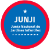
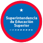

¿Qué tipo de denuncias SÍ son competencia de la Supereduc?
-
Maltrato escolar
-
Discriminación
-
Cancelación de matrícula
-
Medidas disciplinarias
-
Situaciones de connotación sexual
-
Retención de documentos
-
Falta de mobiliario y de elementos de enseñanza
-
Cumplimiento del reglamento de evaluación y promoción escolar
-
Irregularidades en la declaración de asistencia
-
Incumplimiento de planes y programas
-
Irregularidades en el proceso de admisión
-
Uniformes, útiles y textos escolares
-
Problemas con planta docente
-
Participación: Centro de estudiantes, Centro de madres, padres y
apoderados/as, Consejos Escolares
¿Qué tipo de denuncias NO son competencia de la Supereduc?
-
Búsqueda de matrícula y proceso SAE
-
Faltas a la normativa educacional en Educación Superior
-
Contratos laborales de los funcionarios
-
Reclamos por servicios becas y alimentación TNE
-
Autorización para ejercer docencia
-
Solicitud o modificación de Reconocimiento Oficial
-
Cambio de apellidos, nombres, sexo o RUN en documentos
educacionales
-
Detalle de subvenciones entregadas por RBD Sostenedor
-
Certificados de antecedentes laborales previsionales de Docentes y
Asistentes de la Educación (IPS)
-
Problemas o dudas en uso de plataforma SIGE
Antes de continuar con su solicitud, revise esta información y
confirme si su requerimiento debe ser atendido por otra institución.
Búsqueda de matrícula, Sistema de Admisión Escolar, certificados
de estudios, Identificador Provisorio Escolar, certificados de
Alumnos Prioritarios, uso de plataforma SIGE, autorizaciones
para el ejercicio de la docencia, Reconocimiento Oficial,
modificación de datos personales en documentos oficiales
educacionales, detalle de subvenciones entregadas por RBD,
ránking de notas, legalización o apostilla de certificados.

Denuncias respecto a cupos, reclamos con funcionarios de
jardines pertenecientes a las entidades.
Denuncias respecto a cupos, reclamos con funcionarios de
jardines pertenecientes a las entidades.

Hechos o faltas ocurridas en universidades, institutos
profesionales o centros de formación técnica.
Requerimientos respecto a computadores entregados por la
institución, becas, programas de alimentación y Tarjeta Nacional
Estudiantil.
Ingreso de Recursos de Protección ante vulneración de derechos
educacionales. Temas de alcance judicial.
Denuncias por temas contractuales de docentes y asistentes de la
educación, así como responsabilidades administrativas de
establecimientos particulares (subvencionados y pagados).
Denuncias por temas contractuales de docentes y asistentes de la
educación, así como responsabilidades administrativas de
establecimientos públicos.
Requerimientos relacionados a contratos de prestación de
servicios educativos entre privados.